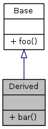

Today's lab session covers class inheritance and the use of abstract classes. Of special importance are the details concerning creation, destruction and copying of objects within class hierarchies. You'll apply these concepts in the context of two interesting and useful design patterns. Along the way you will learn a small & handy C++11 feature. The main exercise builds upon the function-plotter exercise you did last week.
Designing class hierarchies by deriving concrete classes from more abstract ones is one of the most essential features of object oriented programming languages; also C++. A point worth noting is that the concept of deriving classes predates the introduction of C++ by roughly 15 years. By no means is C++ a purely object-oriented language, nor is it the most elegant implementation of the principles. Being a very popular general purpose language, C++ has many of the features that allow for an object-oriented approach of designs. Keep in mind though, that there are many other languages that are "more object-oriented" than C++. Do some reading if you're interested in some more details.
Since the lab sessions are all about practical examples, we'll jump right into
the syntax of deriving a class Derived from another class Base:
class Base {
public:
void foo();
};
class Derived : public Base {
public:
void bar();
};
In this simple case, the UML diagram (generated from the above code snippet with Doxygen by the way) looks like: 
Objects of the Derived class have two members: foo (derived from Base)
and bar (defined in Derived). Therefore the following is valid:
Derived d;
d.foo();
d.bar();
More generally: a member of a derived class can use the public and protected
members of its base class as if they were declared in the derived class.
You can say that a derived class is "larger" than its base class in the sense that it holds more data and provides more functions.
Note the public inheritance. This means that all access modifiers (public,
private and protected) of the Base class members stay the same in
Derived. This is the most common scenario we'll encounter. Two other
possibilities are:
protected: public members of Base become protected in Derivedprivate: all members from Base become private in DerivedIf Base has constructors, they must be invoked in Derived. This invocation
can be implicit (i.e., automatic) in the case of a default constructor. On the
other hand, if Base's constructor needs arguments, it must be called
explicitly. This can be summarized as: constructors are never inherited.
Also, you can't directly initialize members of Base in the constructor of
Derived; even if they're not private (assignment works though).
Base.h:
class Base {
public:
Base(int a);
};
Base.cpp:
Base::Base(int a) {
...
}
Derived.h:
class Derived : public Base {
public:
Derived(int a, int b);
};
Derived.cpp:
Derived::Derived(int a, int b)
: Base(a) { // <- EXPLICIT call to Base's non-default constructor
...
}
The order in which objects are created can be summarized as:
These rules are really very important. One part of the final exam is parforming a trace where you explicitly write out the order of construction & destruction operations on objects. Make sure you know it all!
The above is not 100% true anymore. Please learn about constructor inheritance here and here to see what's been added to C++11 to ease object creation for inherited classes.
Suppose the following scenario:
Base.h:
class Base {
public:
Base(int a);
};
Base.cpp:
Base::Base(int a) {
cout << "Base ctor, a = " << a << endl;
}
Derived.h:
class Derived : public Base {
};
main.cpp:
// -- SNIP --
Derived d(1);
// -- SNAP --
My g++ fails with error: no matching function for call to
'Derived::Derived(int)'. C++11
provides a way to fix this. Read the above Wikipedia article and make the
example work!
In both articles, another interesting C++11 feature is discussed: constructor delegation. Which part of the following snippet relate to constructor inheritance and which part to constructor delegation?
class Base {
public:
Base(int n) : number(n) {};
private:
int number;
};
class Derived: public Base {
public:
using Base::Base;
Derived() : Derived(5) {};
};
Suppose you're doing this:
Derived d;
Base b = d;
or an assignment like:
Derived d;
Base b;
b = d;
The result is that b only knows about Base properties of d. All the
rest is not copied. This is called slicing.
There's an interesting consequence of how constructors are handled in class hierarchies when you're making copies of objects. Consider:
Base.h:
class Base {
public:
Base();
Base(const Base&);
};
Base.cpp:
Base::Base() {
cout << "Base::Base()" << endl;
}
Base::Base(const Base&) {
cout << "Base::Base(const Base&)" << endl;
}
Derived.h:
class Derived : public Base {
public:
Derived();
Derived(const Derived&);
};
Derived.cpp:
Derived::Derived() {
cout << "Derived::Derived()" << endl;
}
Derived::Derived(const Derived&) {
cout << "Derived::Derived(const Derived&)" << endl;
}
What's the output when I do:
Derived d;
Derived d_copy(d);
Do you think what you see is the expected behavior? If not, what's wrong and
how should you fix it? Check if the assignment operator operator= is
similar in how the above situation is handled.
Contrary to the above, when passing around pointers or references to objects, no copies are involved, nor is there any slicing (i.e., no information is lost). For example:
Derived* d_ptr = new Derived;
Base* b_ptr = d_ptr;
now b_ptr pretends to be a pointer to Base but is actually pointing to a
Derived object. This brings us to the important subject of virtual
functions.
Referring to Derived objects through a pointer / reference to Base allows
to use polymorphic method calls. Try this example:
Base.h:
class Base {
public:
virtual void print_info();
};
Base.cpp:
void Base::print_info() {
cout << "Base::print_info()" << endl;
}
Derived.h:
class Derived : public Base {
public:
virtual void print_info(); // NOTE: virtual is optional here
};
Derived.cpp:
void Derived::print_info() {
cout << "Derived::print_info()" << endl;
}
Note that the keyword virtual only appears in the class definition (.h
file); NOT in the definition of its methods (.cpp file)!
Now, different print_info methods will be called depending on object's type:
Base* b_ptr = new Base;
Derived* d_ptr = new Derived;
Base* b_ptr2 = new Derived;
Base& b_ref = *d_ptr;
b_ptr->print_info(); // Base::print_info()
d_ptr->print_info(); // Derived::print_info()
b_ptr2->print_info(); // Derived::print_info() !!!
b_ref.print_info(); // Derived::print_info() !!!
In all cases the object's dynamic type determines which method is called.
The dynamic type is the type of the object pointed to at runtime (remember that
a pointer to a Base object can actually point to a Derived object).
The C++ FAQ lite has a whole section on virtual functions. Especially the part on how virtual functions work internally is interesting if you want a deeper knowledge of C++!
This is called polymorphism. In C++ it only works with pointers and
references to objects. Try removing the virtual keyword from the above
example. What happens?
A slight downside to virtual functions as defined above is that you are
required to implement all methods, even if they really don't do anything useful
yet, as might be the case in the Base class. More often than not a base class
specifies how derived classes should look like (i.e., the interface). The
consequence is that many of the base class methods end up having an empty body.
class TheAnswer {
public:
virtual int get() {
// The base class represents a concept that is too general to
// decide what exectly should be returned. However, the get()
// method needs to be implemented or the code won't compile.
// If you turn on all warnings in gcc with -Wall, you'll even
// get:
// warning: no return statement in function returning non-void
// but you don't know what to return!
// Surely there must be a better way to handle this...
}
};
class TheAnswerToLifeTheUniverseAndEverything : public TheAnswer {
public:
virtual int get() {
return 42;
}
};
The solution to the above problem is declaring TheAnswer::get() to be a
pure virtual function. A pure virtual function has no definition, only a
zero-initializer:
class TheAnswer {
public:
// We don't need to make up answers just to please the compiler!
virtual int get() = 0;
}
As you might have guessed, it now doesn't make any sense to create objects of
the type TheAnswer since they don't know how to behave if you call their
get() method. Any attempt to compile this:
TheAnswer a;
indeed gives:
error: cannot declare variable 'a' to be of abstract type 'TheAnswer'
note: because the following virtual functions are pure within 'TheAnswer':
note: virtual int TheAnswer::get() = 0;
As gcc's error message hints, we'll call TheAnswer an abstract base
class. Read C++ FAQ's section on abstract base
classes now.
General overview of the "what & why" of design patterns: read here.
Here we can see the composite and leaf both classes are implementing the component. The important part is the composite class, this is also containing the component objects shown by the "composite design pattern" relationship:
class PageObject {
public:
virtual void addItem(PageObject a) { }
virtual void removeItem() { }
virtual void deleteItem(PageObject a) { }
};
class Page : public PageObject {
public:
void addItem(PageObject a) {
cout << "Item added into the page" << endl;
}
void removeItem() {
cout << "Item Removed from page" << endl;
}
void deleteItem(PageObject a) {
cout << "Item Deleted from Page" << endl;
}
};
class Copy : public PageObject {
vector<PageObject> copyPages;
public:
void AddElement(PageObject a) {
copyPages.push_back(a);
}
void addItem(PageObject a) {
cout << "Item added to the copy" << endl;
}
void removeItem() {
cout << "Item removed from the copy" << endl;
}
void deleteItem(PageObject a) {
cout << "Item deleted from the copy";
}
};
Having this hierarchy of classes allows to mimick a tree-structure of Copies and Pages:
Page p1;
Page p2;
Copy myCopy;
Copy myCopy1;
myCopy.AddElement(p1);
myCopy.AddElement(p2);
myCopy.addItem(p1);
p1.addItem(p2);
myCopy.removeItem();
p2.removeItem();
p1.addItem(myCopy1);
Check what the output will be!!
Now, try to declare a pointer that you can added copy and page! (PageObject* ob = new Copy). What happens, try to fixed the code to make works at least to add page and copy objects? At the end, it doesn't matter if you're adding pages or copies, they're all objectPages.
Another very useful and common design pattern is an abstract factory and the related factory method. Highly recommended reading:
(often abbrieviated as RTTI)
In the context of class hierarchies three different types of casts can be performed between pointers (or references) to objects of different types:
Derived* to Base*Base* to Derived*Base1* to a Base2 (only for multiple inheritance)"Whatever points to an object of the Derived class, must also point to a
Base":
Derived* d_ptr = new Derived;
Base* b_ptr = d_ptr;
"If you've got a pointer to a Base object, you can't assume it's pointing
to a Derived object". Unless you know for sure, in which case you can use
a dynamic_cast:
Base* b_ptr = new Derived;
Derived* d_ptr = dynamic_cast<Derived*>(b_ptr);
Now, try to remove the virtual function from the Base class. What happens?
Google exercise: look it up!
RTTI deals with the case in which the correctness of the type conversion cannot
be determined by the compiler at compile-time and must be postponed until
run-time. The primary purpose of the dynamic_cast operator is to perform
type-safe downcasts If the conversion fails, a null pointer is
returned. In the case of references, a bad_castexception is thrown.
You can use it for checking the exact type of a polymorphic object:
// Both Derived1 and Derived2 are subclasses of Base
void f(Base* b_ptr) {
if (Derived1* d1_ptr = dynamic_cast<Derived1*>(b_ptr)) {
d1_ptr->derived1Method();
} else if (Derived2* d2_ptr = dynamic_cast<Derived2*>(b_ptr)) {
d2_ptr->derived2Method();
} else {
b_ptr->baseMethod();
}
}
Use this type of constructions only in situations that can not be solved with regular polymorphism & virtual functions!
Knowing all this, you can read the document on
typecasting again. Also,
have a look at some discussions about the use of dynamic_cast, for instance
here
or
here.
Go to the assignment: https://classroom.github.com/a/FbE6csA4
Go to the assignment: https://classroom.github.com/a/f_BNJkqW